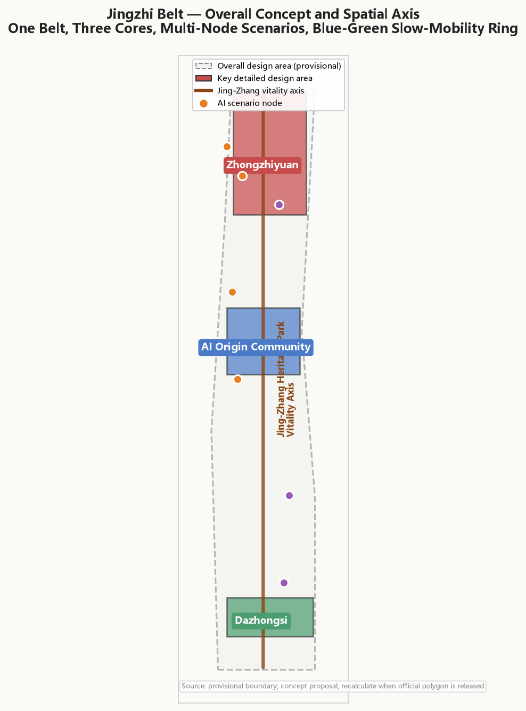
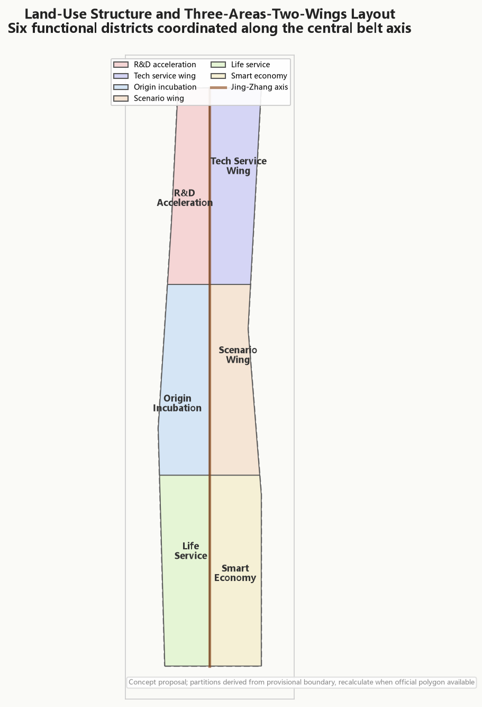
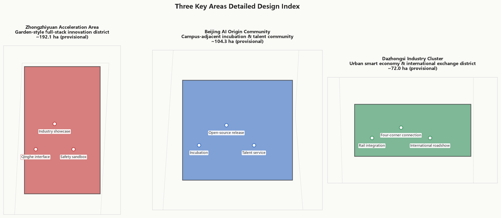
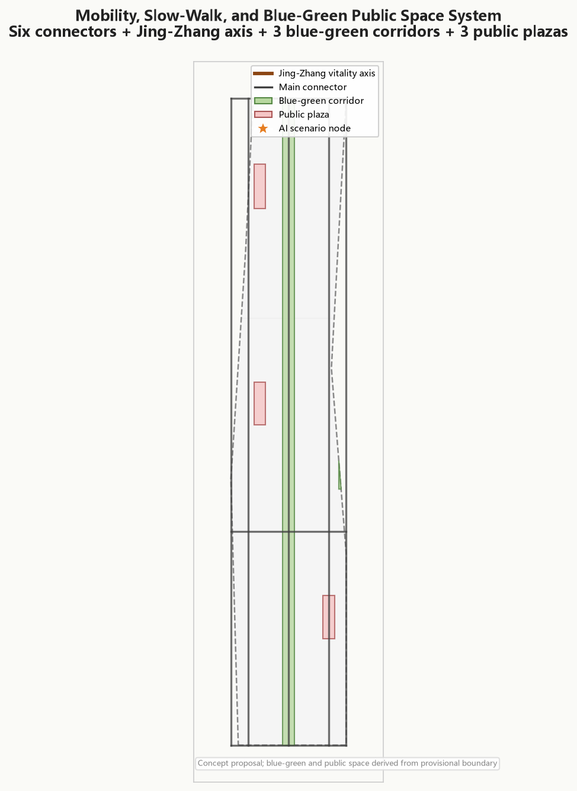
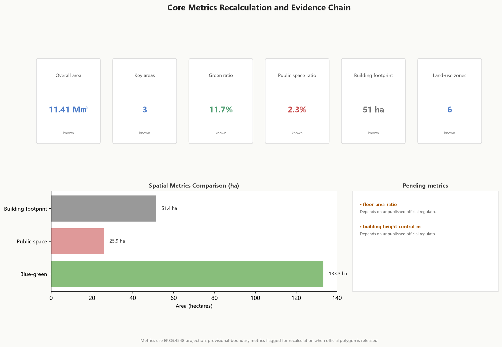

Garden-style full-stack self-innovation district. Spatial moves: strengthen Qinghe interface, industry display, standard-governance sandbox, low-carbon innovation interaction. Scenarios: self-model testing, standard-setting workshops, safety-governance display, low-carbon compute experience.
Campus-adjacent transformation and talent community. Spatial moves: campus-park-district slow-walk stitching, open-source release hall, talent services, residential life. Scenarios: open-source community, release events, talent-zone services, campus-adjacent incubation.
Urban smart-economy and international-exchange district. Spatial moves: Dazhongsi station integration, four-corner pedestrian connectivity, commercial services. Scenarios: agent and smart-terminal display, content consumption, data elements, international roadshows.
| # | Scenario | Spatial carrier |
|---|---|---|
| 01 | Open-source release hall | Beijing AI Origin Community |
| 02 | Safety-governance sandbox | Zhongzhiyuan |
| 03 | Edge-compute relay | Overall design area nodes |
| 04 | AI walkability navigation | Jing-Zhang heritage park |
| 05 | Dazhongsi international roadshow lounge | Dazhongsi |
| 06 | Qinghe low-carbon innovation corridor | Zhongzhiyuan Qinghe interface |
| 07 | Campus-adjacent transformation street | Beijing AI Origin Community |
| 08 | Data-element reception | Dazhongsi |
| 09 | AI life-service model street | Community-commercial interface |
| 10 | Global AI Week route | Belt-wide public-space system |
| Requirement | Status |
|---|---|
| 1.3.1 Build world-class AI innovation ecosystem | Covered |
| 1.3.2 Adapt urban form to AI new productive forces | Covered |
| 1.3.3 Build high-quality district for global AI talent | Covered |
| 1.4 Coordinated research / overall / key-area scope | Covered |
| 1.5 Detailed design of three key areas | Covered |
| agent.1 Belt-wide concept and functional coordination | Covered |
| agent.2 Full-stack self-innovation and ecosystem | Covered |
| agent.3 AI+ scenarios and smart vitality city | Covered |
| agent.4 AI public space, new formats, pilgrimage landmarks | Covered |
| agent.5 Jing-Zhang / Zhongguancun / AI culture fusion | Covered |
| agent.6 Global AI events and long-term operations | Covered |
Self-check passed locally with provisional-boundary precision warnings preserved. Organizer data gaps do not block content scoring. Recalculation required once official polygon is supplied.